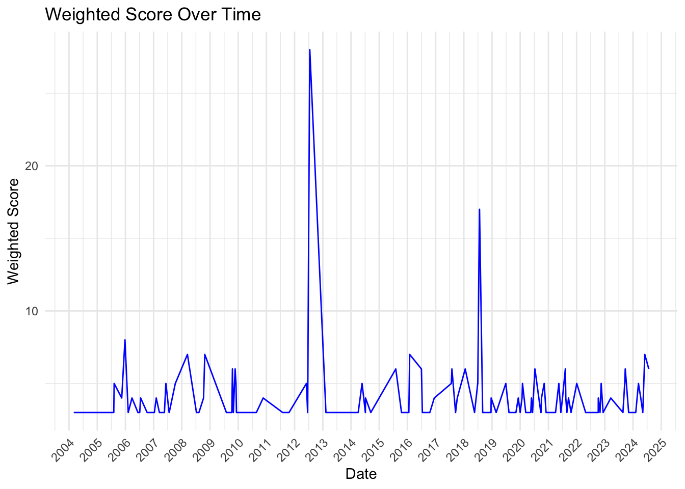
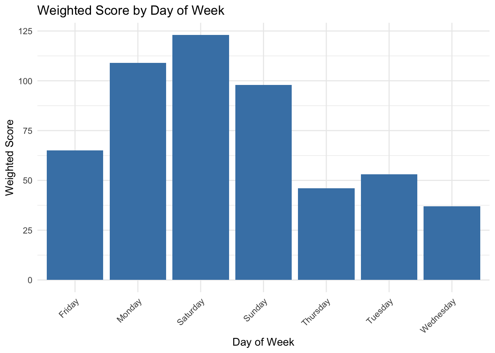
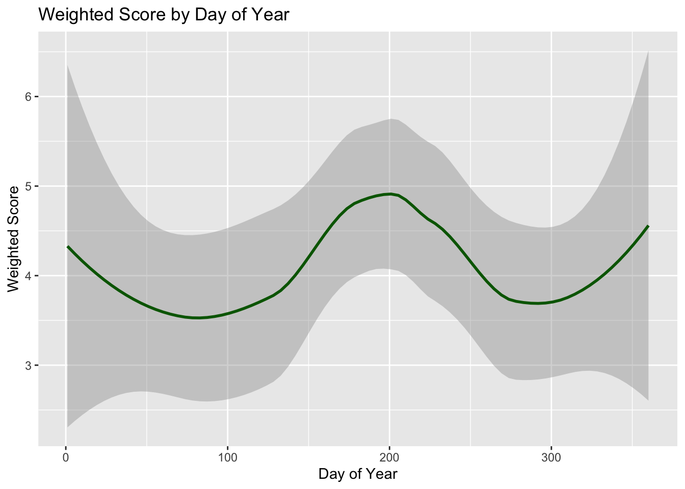
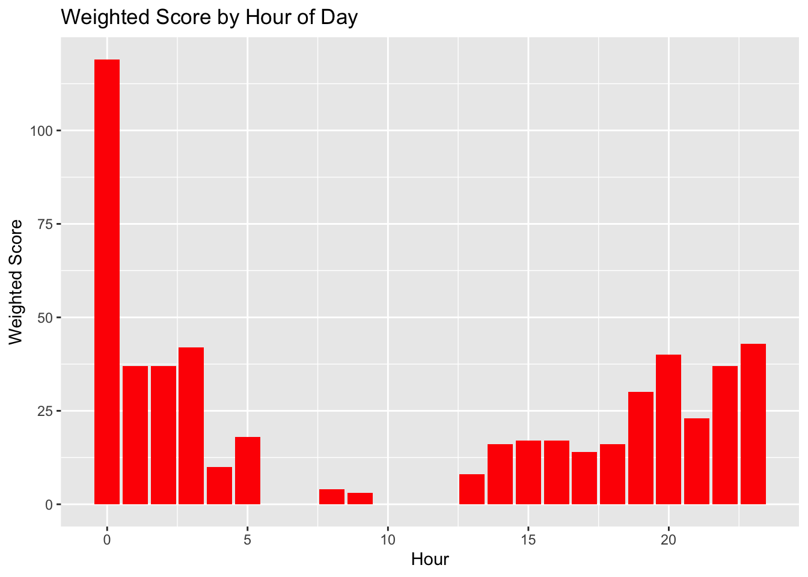
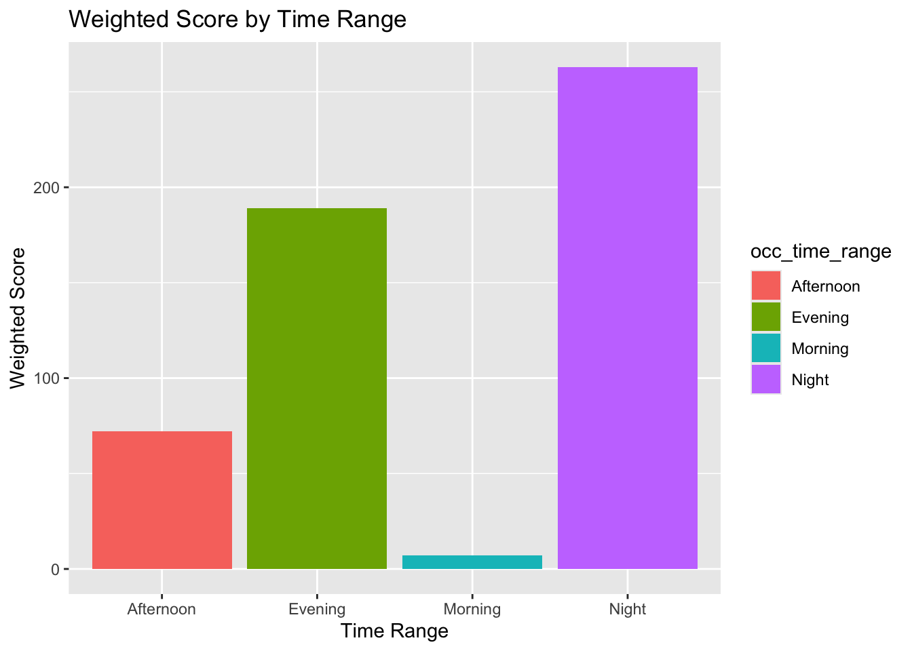
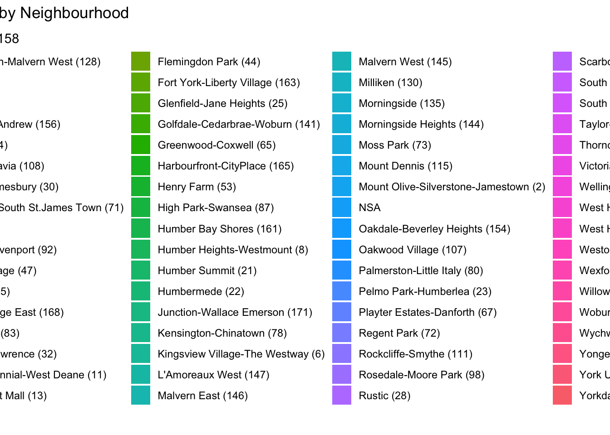
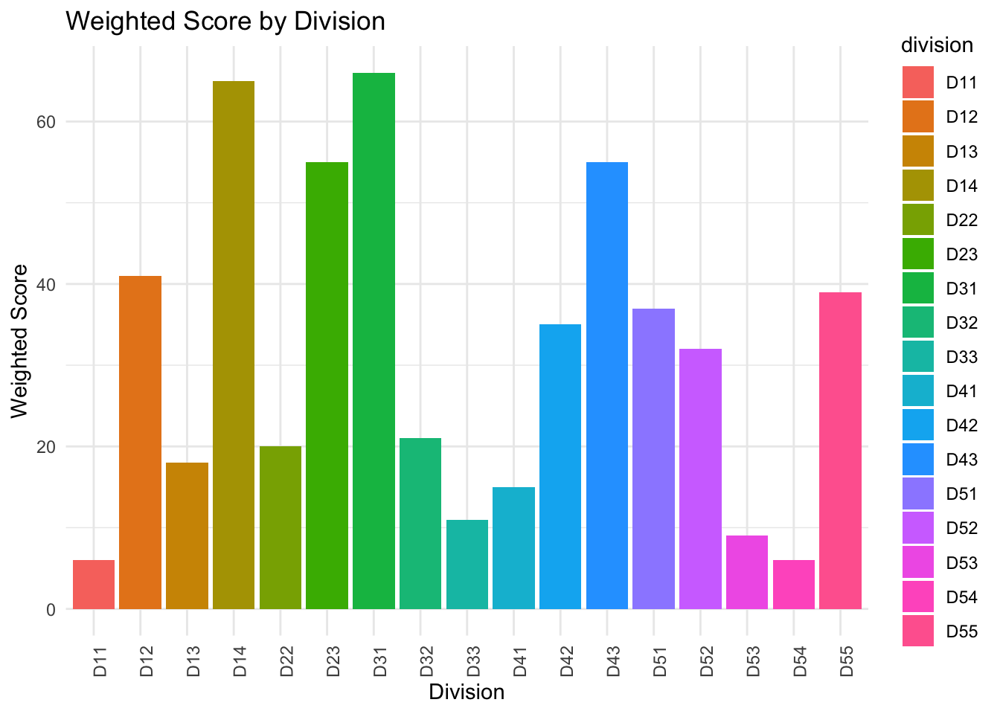
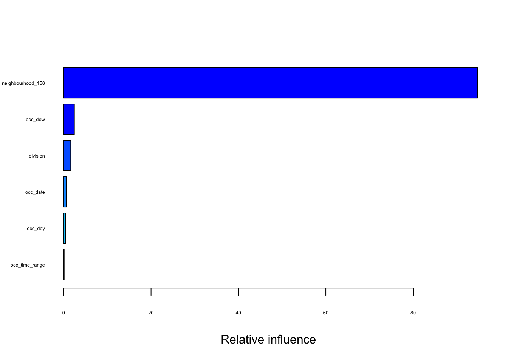

Analysis of Shootings and Firearm Discharges in Toronto
A Comprehensive Examination Reveals Significant Time and Locational Impacts on Incident Severity
Abstract
This paper analyzes the impact of time and location on the severity of shootings and firearm discharges in Toronto, utilizing a Gradient Boosting Machine model. The findings highlight significant variations across different times and locations, emphasizing the need for targeted policy interventions. This study not only aids in understanding the dynamics of urban violence but also assists in resource allocation for law enforcement and public safety initiatives.The narrative structure of this analysis follows the guidelines provided in “Telling Stories with Data” (Alexander 2023).
Introduction
The safety and security of urban areas are of paramount importance to their residents and governance structures. In Toronto, the occurrence of shootings and firearm discharges poses significant challenges to public safety. Understanding the patterns and determinants of these violent events is crucial for developing effective interventions and policies. This paper employs a Gradient Boosting Machine model to analyze how time-related factors and geographic locations influence the severity of shooting incidents in Toronto.
Estimand
This study aims to estimate the effect of time (day of week, hour, and time range) and location (neighbourhood and police division) on the severity of shootings and firearm discharges in Toronto, measured by a weighted score combining deaths and injuries.
Importance of the Study
The results of this study are crucial for informing public safety strategies and police resource allocation in Toronto, aiming to reduce the incidence and severity of violent firearm-related incidents.
Data
Data for this study is sourced from Open Data Toronto(Toronto 2024): https://open.toronto.ca/dataset/shootings-firearm-discharges/, detailing all recorded shootings and firearm discharges within the city limits from 2004 to 2024.
Data Cleaning
Data cleaning was performed using R(R Core Team 2023) packages such as tidyverse(Wickham et al. 2019) and lubridate. The occ_date variable was converted to a numeric format to fit the model requirements, and categorical variables were transformed using appropriate factor conversions.
Variables
Outcome Variable
Weighted Score: Combines the number of deaths and injuries, weighting deaths twice as heavily(weighted_score = death * 2 + injuries).
Predictor Variables
Time Factors:
occ_date(date): Date of Offence Occurredocc_dow(day of the week): Day of the Month Offence Occurredocc_time_range(morning, afternoon, evening):Time Range of Day Offence OccurredLocation Factors:
neighbourhood_158:Name of Neighborhood using City of Toronto’s new 158 neighborhood structuredivision: Police division where offence occurred
Data visualization
Weighted Score Over Time
This plot Figure 1 illustrates the variation in the weighted scores of shootings and firearm discharges in Toronto from 2004 to 2025. The weighted score, which combines the number of deaths and injuries with deaths being given a higher weight, is plotted against the date of incidents. Notably, the plot reveals several significant spikes, indicating periods with higher shooting severity. These peaks might correlate with specific events or changes in local circumstances, warranting further investigation. The majority of the time, however, the weighted scores remain relatively low, suggesting sporadic rather than consistent patterns of high-severity incidents. This visualization highlights the dynamic nature of crime severity over time and underscores the importance of continuous monitoring and analysis to understand the underlying trends and triggers.
Weighted Score by Day of week

The bar chart Figure 2 illustrates the weighted scores of shootings and firearm discharges in Toronto, broken down by day of the week. Notably, the weekend days (Saturday and Sunday) along with Monday, show elevated scores, suggesting a higher incidence of severe incidents during these days. This trend could be attributed to increased social activities and gatherings during the weekend, potentially leading to more conflicts or accidents. Conversely, the mid-week days (Tuesday and Wednesday) exhibit notably lower scores, indicating fewer severe incidents.
Weighted Score by Day of Year

The line graph Figure 3 visualizes the trend of shootings and firearm discharges in Toronto across different days of the year. The plot shows a clear seasonal pattern, with peaks generally occurring around mid-year and towards the end, particularly noticeable in the increase during summer and winter months. This could correlate with seasonal activities and social behaviors such as holidays and outdoor gatherings that might contribute to increased incidents. The valleys observed during early spring and late fall might reflect quieter periods with fewer such gatherings.
Weighted Score by Hour of Day

The bar graph Figure 4 presents the distribution of shootings and firearm discharges in Toronto by hour. This visualization demonstrates a notable peak in incidents during the very early hours of the day, specifically around midnight, with a dramatic decline shortly after. A secondary, but less intense, peak occurs in the evening hours, spanning from 8 PM to midnight.
This pattern suggests that incidents tend to happen more frequently during late-night hours, possibly linked to social and recreational activities during these times, or reduced visibility and police presence making these hours more conducive to criminal behavior. Conversely, the hours from early morning to mid-afternoon show markedly lower incidents, reflecting perhaps quieter public activity and higher visibility and vigilance during daylight hours.
Weighted Score by Time Range

This bar graph Figure 5 illustrates the severity of shootings and firearm discharges in Toronto across different time range of the day. The time ranges are categorized into morning, afternoon, evening, and night.
The graph reveals a stark increase in incident severity during the night, which towers over the scores recorded for other times of the day. This is followed by the evening, which also shows a considerably high level of incident severity. The overall trend of this graph is highly corresponding to the bar chart of weighted score over hour of the day, basically, this graph provides a more straightforward relationship between the weight score over different periods in a day.
Weighted Score by Neighborhood

The bar chart Figure 6 displays the severity of shootings and firearm discharges across various neighborhoods in Toronto, segmented by the neighbourhood_158 identifiers. Each bar represents a different neighbourhood, color-coded for visual differentiation and labeled with both the neighbourhood name and a unique identifier number.
This visualization highlights the disparity in incident severity across the city, with some neighbourhoods experiencing significantly higher weighted scores than others. Notably, certain areas show peaks which suggest hotspots of violent incidents. Such patterns are crucial for identifying regions that may require more focused law enforcement and public health interventions to mitigate the impact of firearm-related violence.
Weighted Score by Division

This bar chart Figure 7 illustrates the variation in the severity of shootings and firearm discharges across different police divisions in Toronto. Each division is represented by a unique color and labeled with its respective code (D11 through D55), which simplifies identification and comparison across the chart.
The visualization provides a clear depiction of how incident severity is distributed across the police divisions, with some divisions showing considerably higher weighted scores than others.
Model Details
Model Description
The analysis employed a Gradient Boosting Machine (GBM) model(others 2020) using the gbm package in R, designed to predict the weighted scores of shootings and firearm discharges in Toronto based on multiple time-related and geographical predictors and using the caret package for advanced modeling techniques (Kuhn 2021).
The weighted score is a computed metric that assigns double weight to deaths compared to injuries, highlighting the gravity of incidents resulting in fatalities.
Model Setup
Response and Predictor variables
The response variable, weighted_score, combines the effects of deaths and injuries, assigning greater importance to the former. Predictors included:
occ_date: Numeric representation of the incident date.occ_dow: Factor variable indicating the day of the week.occ_doy: Numeric day of the year to capture seasonal effects.occ_time_range: Categorical variable divided into morning, afternoon, evening, and night.neighbourhood_158: Factor variable representing different neighborhoods.division: Factor variable representing police divisions.
Model Configuration
The model was configured with the following parameters to control the complexity and fit of the model:
• Number of Trees: 500, providing sufficient model complexity and accuracy.
• Interaction Depth: 4, allowing interactions among up to four predictors.
• Shrinkage: 0.01, controlling the learning rate to avoid overfitting.
• Cross-validation Folds: 5, used to validate the model internally and optimize parameter selection.
Model Performance
Variable Importance
The summary function highlighted the relative importance of each predictor shown in Figure 8. Notably, the neighborhood variable (neighbourhood_158) dominated the model, indicating significant spatial variation in shooting severities across Toronto. The occ_dow and division showed moderate influence, suggesting that day of the week and police division also contribute to variations in incident severity, albeit to a lesser extent.
var rel.inf
neighbourhood_158 neighbourhood_158 94.7100842
occ_dow occ_dow 2.4428780
division division 1.6338084
occ_date occ_date 0.6334998
occ_doy occ_doy 0.4675681
occ_time_range occ_time_range 0.1121617

Model Performance
The model’s accuracy was assessed using the Root Mean Square Error (RMSE), calculated at 2.173830. This metric quantifies the average magnitude of the model’s prediction errors, providing a measure of predictive accuracy.
Result Interpretation
The results underline the critical influence of geographic location (neighbourhood_158) on the severity of shooting incidents, implying that certain areas are systematically associated with higher severity scores. Temporal factors like the day of the week (occ_dow) and specific police divisions also play roles but are less pronounced compared to spatial factors.
Discussion
Implications
Findings from this model underscore the need for targeted interventions in specific neighbourhoods and at times where shootings are most severe.
Limitations and Future Research
While the model provides valuable insights, it also has limitations due to potential unobserved confounders. Future research should consider additional data sources and alternative modeling approaches.
Policy Recommendations
Based on the model’s findings, it is recommended that public safety measures and police resources be strategically focused on specific neighborhoods and times identified as high-risk, enhancing targeted interventions and preventive strategies. These efforts should prioritize the areas and periods with the highest weighted scores, potentially reducing the frequency and severity of shootings by aligning law enforcement presence with predicted incident peaks.
Conclusion
This study offers a detailed examination of the spatial and temporal factors influencing the severity of shootings and firearm discharges in Toronto, employing a robust Gradient Boosting Machine model.
The findings highlight the critical role of specific neighborhoods and time periods in the incidence of these violent events, underscoring the potential for targeted interventions. By focusing law enforcement efforts and community resources on high-risk areas and times identified through the analysis, it is possible to significantly mitigate the impact of such incidents on public safety.
The actionable insights provided by this study not only serve as a guide for strategic policy formulation and resource allocation but also support the ongoing efforts to enhance the efficacy of public safety measures in urban environments. This approach ensures that policy responses are data-driven and tailored to the unique dynamics of the city, ultimately contributing to a safer community for all residents.
References
Alexander, Rohan. 2023. Telling Stories with Data. Chapman & Hall/CRC. https://tellingstorieswithdata.com/.
Kuhn, Max. 2021. caret: Classification and Regression Training. https://CRAN.R-project.org/package=caret.
others, Greg Ridgeway with contributions from. 2020. gbm: Generalized Boosted Regression Models. https://CRAN.R-project.org/package=gbm.
R Core Team. 2023. R: A Language and Environment for Statistical Computing. Vienna, Austria: R Foundation for Statistical Computing. https://www.R-project.org/.
Toronto, City of. 2024. “Open Data Toronto: Shootings and Firearm Discharges.” https://open.toronto.ca/dataset/shootings-firearm-discharges/.
Wickham, Hadley et al. 2019. “Welcome to the tidyverse.” Journal of Open Source Software 4 (43): 1686. https://doi.org/10.21105/joss.01686.